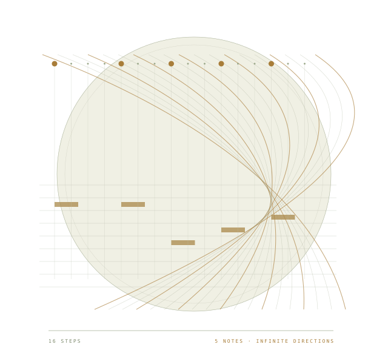
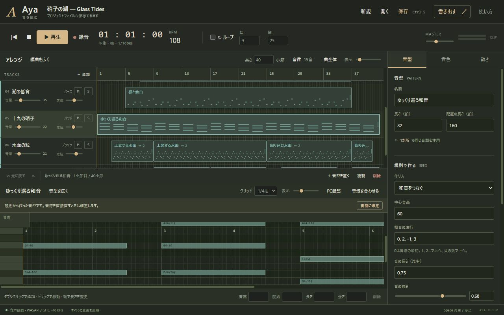

A LOCAL INSTRUMENT FOR MAKING MUSIC
音型を育てる。
一曲を編む。
規則でリズムやフレーズを作り、聴きながら変え、気になる音符は直接直す。Ayaは、ひとつの音型を自分の曲に育てるための、Windows向け音楽制作アプリです。

THE INSTRUMENT
音型も、曲の流れも、同じ画面で。
上で曲を組み立て、下で一音を直す。規則の結果も音符として見えるから、耳と手で確かめながら進められます。

01 / A PATTERN BECOMES A PIECE
思いついた音を、
その先まで。
繰り返しは、曲を育てる材料です。同じ音型を使い続けても、途中から独立させても。規則を試す手と、一音を選ぶ手を行き来できます。
規則で音型をつくる
16個の場所へ5音を散らす。音階の順に音を並べる。和音をつなぐ。まずは小さな種を作ります。
回して、裏返して、展開する
音型を回転・逆行・移調・伸縮し、別の表情を探します。同じ音型を使う配置には、変更がまとめて届きます。
音符を手に取り、曲にする
気に入った結果を「音符に確定」。一音の高さや長さを直し、音型を時間軸へ並べて、一曲へ仕上げます。
PATTERN STUDY / 5 IN 16
ブラウザーで動く操作の説明図 · 音は鳴りません02 / ROOM BETWEEN THE NOTES
1オクターブを、
19等分してみる。
いつもの12音の間にも、音を置けます。平均律の分割数、使う音階、基準周波数を選び、音の並びを探しましょう。音高は小数でも編集でき、12音に丸めずに演奏・書出しへ進みます。
作例「硝子の潮」は、19平均律の7音の音階で作りました。違いを、ひとつの曲として聴けます。
A REAL PIECE, MADE IN AYA
Glass Tides
低い鼓動、繰り返す粒、ゆっくり巡る和音。その上を、小さな旋律が通ります。Ayaの内蔵音源と音型、19平均律、音量・音色の時間変化で作ったオリジナルの制作例です。
03 / A COMPLETE LOCAL WORKFLOW
保存した曲は、
自分の手元に。
アカウントも、制作中のネット接続もいりません。ダウンロードしたAyaを起動し、作り、保存する。WAV素材を読み込んだ曲も、素材ごとひとつのプロジェクトファイルに残せます。
- 音を作り、空間を整える
ベース、パッド、ベル、リード、撥弦、打楽器。WAV素材も楽器として使えます。音量・定位・フィルターと、テンポに合ったディレイを調整できます。
- 時間とともに、音を動かす
音量・定位・フィルターの開きを、点と線で描きます。トラックごとのミュート・ソロ、区間ループで、気になる場所を確かめられます。
- 続きを作り、音を渡す
元に戻す・やり直す、自動回復、素材を含む保存。仕上げはステレオWAVやトラック別WAVへ。MIDIファイルでも既存の制作環境と往復できます。
FOR THE CURIOUS / FOR DEVELOPERS
音符の規則から、1サンプルの計算まで。
作曲の規則、有理数の拍、検査した音声計画、実際の波形。通常のHaskell/GHCが音符の意味と音の計算を担います。仕組みを追い、変えたい人のための読み物を用意しました。
AYA 0.1.0 / WINDOWS X64
自分の音で、
試してみる。
Ayaの初版を、Windowsで。作例を開いて音を聴くところからでも、空の曲からでも始められます。
Windows版をダウンロードWindows x64向け。音声は48 kHz。現在の編集画面は日本語です。
Ayaの独自コードはMITライセンスで公開しています。
- 01ZIPを展開して、
Launch.cmdを開きます。 - 02ブラウザーに制作画面が開き、ローカルの音声エンジンにつながります。
- 03曲を保存してから、
Close.cmdでアプリを終了します。
ブラウザーだけで使えますか？
制作画面にはブラウザーを使います。音を計算してデバイスへ送るのは、同じPCで動くネイティブのHaskellエンジンです。配布ZIPのLaunch.cmdから起動してください。
保存や書出しは、どんな形式ですか？
プロジェクトは.ayaファイルです。中身はJSONで、読み込んだWAV素材も含みます。音源は48 kHzステレオWAVとトラック別WAVに書き出せます。MIDIファイルの読込み・書出しも使えます。
プラグインや外部の録音機器は使えますか？
初版は内蔵音源、WAV素材、PC鍵盤での演奏・録音が中心です。VST、ASIO、マイク録音、外部MIDI機器の自動接続には対応していません。MIDIファイルの微分音は、受信側のピッチベンド対応などに条件があります。
オフラインでも制作できますか？
ダウンロードして展開したあとは、アカウントやネット接続なしで制作できます。曲と素材は手元のプロジェクトに保存します。
ソースやライセンスはどこで読めますか？
GitHubリポジトリで公開しています。Ayaの独自コードはMITライセンスです。同梱する依存ライブラリーには、それぞれのライセンスがあります。著作権表示・ライセンスと再配布時の情報は、配布ZIPと依存ライブラリーの案内、licensesを参照してください。